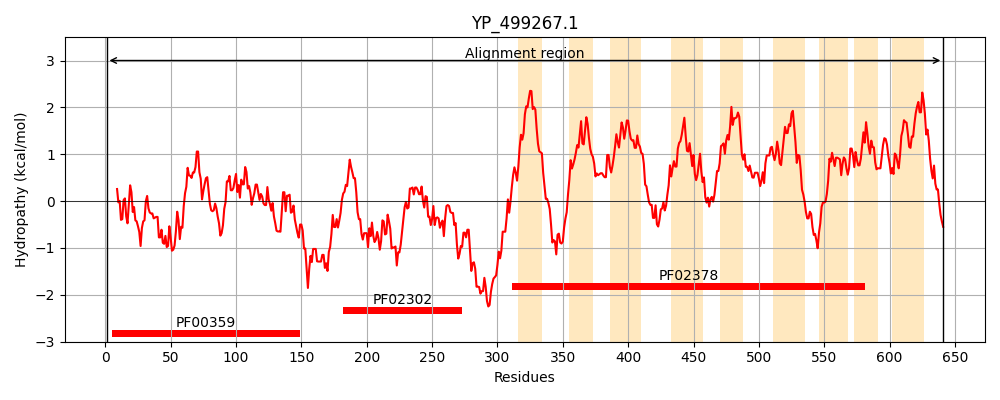
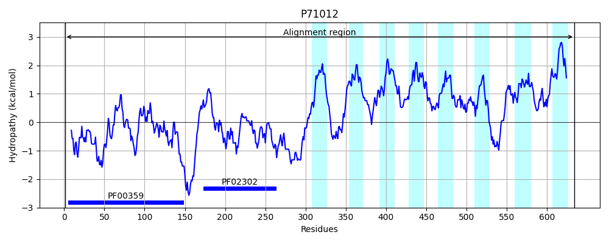
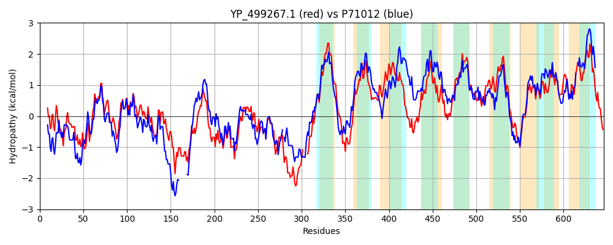

Hit Accession: P71012
Hit TCID: 4.A.2.1.4
Hit Description: gnl|BL_ORD_ID|11303 gnl|TC-DB|P71012|4.A.2.1.4 Phosphotransferase system (PTS) fructose-specific enzyme IIABC component (Fructose PTS IIABC) - Bacillus subtilis.
Mach Len: 646
e:0.000000
Query TMS Count : 9
Hit TMS Count: 8
TMS-Overlap Score: 6.650000
Predicted Substrates:CHEBI:5172;fructose
BLAST Alignment:
Score: 1653 , Bit scores: 641 bits, E-value: 0.0e+00, Alignment length: 646, Percentage identity: 52
Query: 1 MRVTELLTKDTIAMDLMANDKNGVIDELVNQLDKAGKLSDVASFKEAIHNRESQSTTGIGEGIAIPHAKVAAVKSPAIAFGKSKAGVDYQSLDMQPAHLFFMIAAPEGGAQTHLDALAKLSGILMDENVREKLLHASSPEEVLAIIDEADDEVTKEEEAEAEAQQVATAEQSSKQSNEPYVLAVTACPTGIAHTYMARDALKKQADKMGIKIKVETNGSSGIKNHLTEQDIENATGIIVAADVHVETDRFDGKNVVEVPVADGIKRPEELINKALDTSRKPFVARDGQRKGNSNDSQEKLSP-----GKAFYKHLMNGVSNMLPLVISGGILMAIVFLFGANSFNPKSSEYNAFAEQLWNIGSKSAFALIIPILSGFIARSIADKPGFASGLVGGMLAISGGSGFIGGIIAGFLAGYLTQGVKAMTRKLPQALEGLKPTLIYPLLTVTATGLLMIYAFNPPASWLNHLLLDGLNNLSGSNIVLLGLVIGAMMAIDMGGPFNKAAYVFATGALIEGNAAPITAAMIGGMIPPLAIATAMLIFRRKFTKEQRGSIIPNYVMGMSFITEGAIPFAAADPLRVIPSMMIGSGIGGAIALGLGSRITAPHGGIIVIVGTDGAHLLQTLIALLVGTLVSALIYGLIKPKLTE 641
M++TELLTK TI +++ + +K VIDE+V LDKAGKL+D ++KEAI NRESQS+TGIGEGIAIPHAK A+V +PAIAFG+SK GVDY+SLD QPAHL FMIAA EG THL+AL++LS +LM E +R++LL A S + ++ II++ D + +EEE E E + + + +LAVTACPTGIAHT+MA DALK++A ++G++IKVETNGSSGIK+ LT Q+IE+A IIVAAD VE +RF GK V++VPV GI+RP+ELI KA++ P G SND +E G FYKHLM+GVSNMLP V+ GGIL+AI F +G +S +P YN FA L IG +A LI+ +L+GFIA SIAD+PGFA G+VGG +A +GF+GG+IAGFLAGY+ +K + +PQ+L+GLKP LIYPL + TG+LM + N P + + L + L +L N+VL+G+++G MMAIDMGGP NKAA+ F + GN AP A M GGM+PPL IA A IFR KFT+ R + I Y MG +F+TEGAIPFAAADPLRVIP+ ++G+ + G + + APHGG+ V T+ H + L+++++G +V A+I G++K +TE
Sbjct: 1 MKITELLTKHTIKLNIESKEKENVIDEMVTVLDKAGKLNDRQAYKEAILNRESQSSTGIGEGIAIPHAKTASVINPAIAFGRSKDGVDYESLDGQPAHLVFMIAATEGANNTHLEALSRLSTLLMREEIRKQLLEAESEDAIIDIINQHDKDDDEEEEEE---------EAAPAPAGKGKILAVTACPTGIAHTFMAADALKEKAKELGVEIKVETNGSSGIKHKLTAQEIEDAPAIIVAADKQVEMERFKGKRVLQVPVTAGIRRPQELIEKAMNQDA-PIYQGSGGGSAASNDDEEAKGKSGSGIGNTFYKHLMSGVSNMLPFVVGGGILVAISFFWGIHSADPNDPSYNTFAAALNFIGGDNALKLIVAVLAGFIAMSIADRPGFAPGMVGGFMATQANAGFLGGLIAGFLAGYVVILLKKVFTFIPQSLDGLKPVLIYPLFGIFITGVLMQFVVNTPVAAFMNFLTNWLESLGTGNLVLMGIILGGMMAIDMGGPLNKAAFTFGIAMIDAGNYAPHAAIMAGGMVPPLGIALATTIFRNKFTQRDREAGITCYFMGAAFVTEGAIPFAAADPLRVIPAAVVGAAVAGGLTEFFRVTLPAPHGGVFVAFITN--HPMLYLLSIVIGAVVMAIILGIVKKPVTE 634 | Protein Hydropathy Plots: |
|---|
|  |  |
Pairwise Alignment-Hydropathy Plot:
|
|---|
|  |